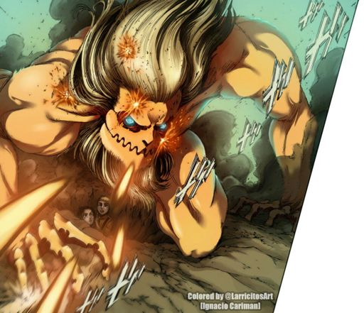

List of the Nine Titans
Attack/Rogue/Berserker Titan
"The Attack Titan is one of the Nine Titans, striving for freedom throughout the time it has existed."
Abilities/Powers/Features
- Can see the memories of past inheritors
- Can see the memories of future inheritors
- Can harden skin/Crystallization
- Fast healing
- Appearance of a man
Known past inheritors
- Eren Kruger (819-832)
- Grisha Yeager (832-845)
Current inheritor
- Eren Yeager (845-present(854))
Female Titan
"Why does that one look like a girl?"
Abilities/Powers/Features
- Endurance and stamina
- Titan Attraction (Scream lures in abberant titans)
- Can harden skin/Crystallization
- Appearance of a woman
Known past inheritors
Current inheritor
- Annie Leonhart (Approx. 843-present(854))
Colossal/Colossus Titan
"It's the greatest threat to all of humanity!"
Abilities/Powers/Features
- Transformation from human to titan creates a large explosion
- Can emit large amounts of steam from body
- Approx. 60 metres tall
- Appears as if it doesn't have skin
Known past inheritors
- Bertholdt Hoover (Approx. 843-850)
Current inheritor
- Armin Arlert (850-present(854))

Armoured Titan
"The armoured is the one that specializes in both defense and offense."
Abilities/Powers/Features
- Armoured skin plates
- Ability to break armoured skin plates on back of legs to run faster
Known past inheritors
Current inheritor
- Reiner Braun (Approx. 843-present(854))

Beast Titan
"Is that a monkey?"
Abilities/Powers/Features
- Hardening of skin/Crystallization
- Control of abberant titans through roar
- Ability to titanize humans injected with the Beast Titan's spinal fluid
Known past inheritors
Current inheritor
- Zeke Yeager (Approx. 841-present(854))
Jaw Titan
"Its small size, quick speed, powerful jaws and claws makes it the main assault unit."
Abilities/Powers/Features
- Extreme speed and agility
- Powerful jaw and teeth
- Sharp and thick claws
- Appearance is similar to that of a lion
Known past inheritors
- Marcel Galliard (Approx. 843-845)
- Ymir (845-850)
- Porco Galliard (850-854)
Current inheritor
- Falco Grice (854-present(854))

Cart/Quadrupedal Titan
"Its high endurance makes it well suited to long missions and also allows it to be equiped with armaments, expanding the variety of strategies for combat."
Abilities/Powers/Features
- High endurance
- Quadrupedal form
- Great speed and muscle for strength
Known past inheritors
Current inheritor
- Pieck Finger (Approx. 843-present(854))

Warhammer Titan
"It has the ability to control titan hardening to create any weapon or any object it needs while underground."
Abilities/Powers/Features
- Creation of objects or weapons from titan hardening
- Can be controlled by the titan shifter from a remote area instead of inside the nape
- Extremely quick recovery and healing
- Can re-attach seperated body parts instead of having to grow new ones like the other titans
Known past inheritors
- Younger sister of Willy Tybur (Unknown-854)
Current inheritor
- Eren Yeager (854-present(854))
Founding/Coordinate/God Titan
"The Founding Titan has the ability to rule and control all the other titans."
Abilities/Powers/Features
- Can transform Eldians into titans if the titan shifter carries the blood of the royal family or comes in physical contact with a carrier of the blood of the royal family
- Can control the behavior of abberant titans
- Can control the memories of any person of the Eldian race
- Anatomical manipulation of any Eldian
Known past inheritors
- Ymir Fritz (Approx. 2000 years ago-Unknown)
- Karl Fritz (Approx. 107 years ago-Unknown)
- Father of Rod and Uri Reiss (Unknown-Unknown)
- Uri Reiss (Unknown-Unknown)
- Frieda Reiss (Unknown-Unknown)
- Grisha Yeager (Unknown-845)
Current inheritor
- Eren Yeager (845-present(854))